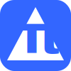

Mobirise application extension by
DeltaPi
to edit global and individual pages settings (html/header/body/footer).
Allow also to Copy/Paste page from one site to another (compatible themes).
Additionnaly, the project path can be shown.